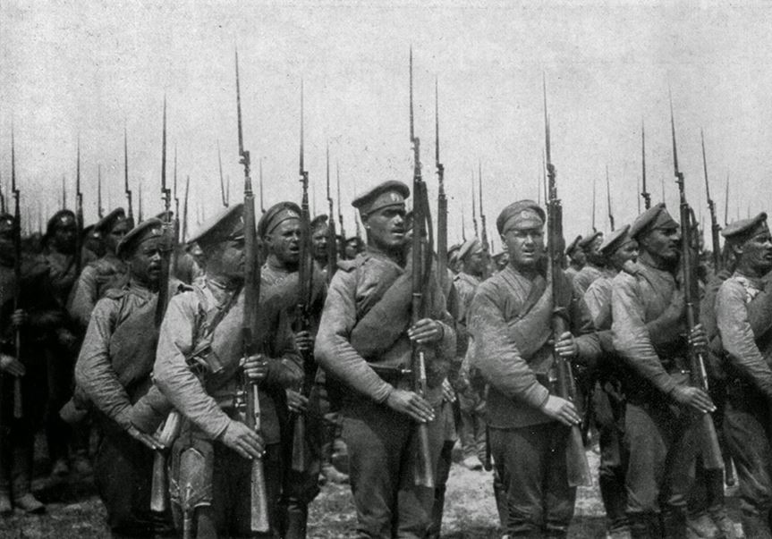
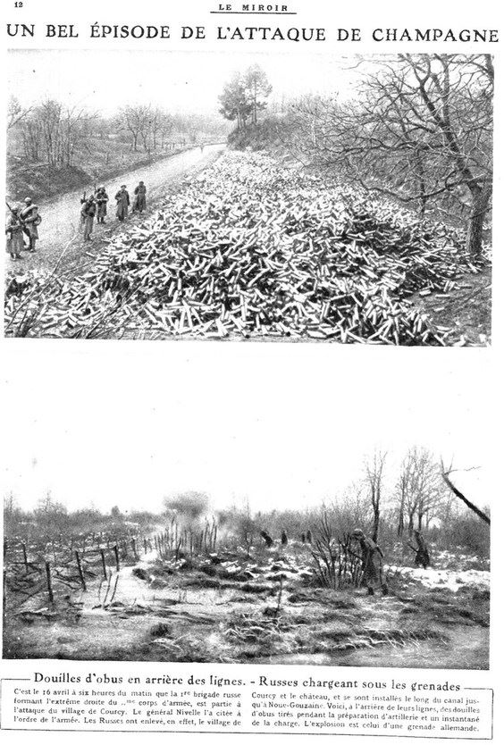
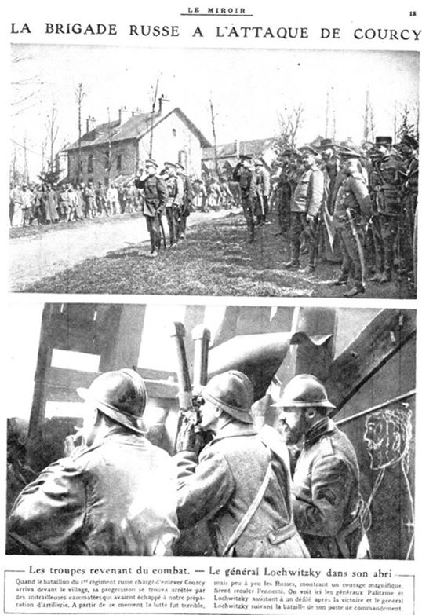
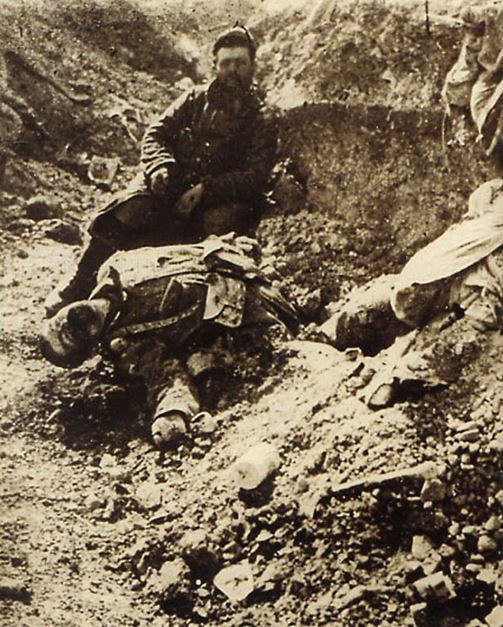
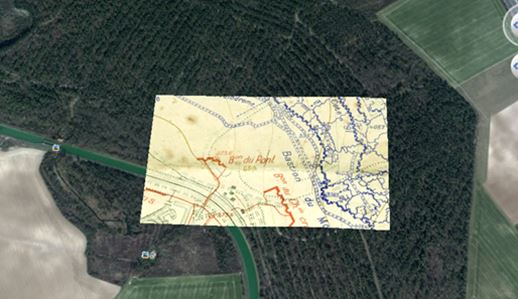
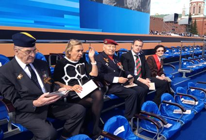

Il y a cent ans, en pleine Première Guerre mondiale, un accord entre la France et la Russie était signé pour l'envoi de deux brigades volontaires sur notre sol afin de combattre aux côtés des troupes alliées sur le front ouest. Ces deux brigades seront connues sous le nom de « Corps Expéditionnaire Russe ».
Après une année 1916 relativement clémente, le mois d'avril 1917 causera la perte de plus de 5000 soldats russes dans les deux brigades lors de la terrible offensive Nivelle du 16 avril 1917 pour la 1ère Brigade et du 19 avril 1917 pour la 3ème brigade. La 1ère Brigade est souvent citée par les historiens car elle réussit un des seuls succès du 16 avril en prenant le village de Courcy près de Reims au prix de plus de 2200 tués, blessés ou disparus.
Cependant, la 3ème Brigade est peu évoquée étant donné son histoire tragique.
En effet, un bataillon de la 3ème Brigade est chargé d'attaquer le 16 avril 1917 le Mont de Sapigneul et la Côte 108 près de Berry-au-Bac au sein de la 40ème Division d'Infanterie. Ce bataillon, encadré par le 251ème régiment d'Infanterie, et part du Bastion du Pont. A 6h00, le Russes s'élancent vers les tranchées de première ligne et parviennent, au prix de terribles pertes, à occuper la Côte 108 ainsi que le Mont de Sapigneul. Malheureusement, en fin de journée, décimés, à court de munitions et sans renfort, ils doivent se replier vers leurs tranchées de départ, à l’exception toutefois de la côte 108 qui sera gardée par les troupes Françaises jusqu'en 1918.
Durant deux jours, ils se réorganisent afin de lancer une attaque frontale sur l'imprenable Mont-Spin situé à moins de deux kilomètres de Sapigneul Le 5ème régiment attaque avec deux bataillons et le 6ème régiment avec un bataillon. Le 19 avril, à 14h54, cette horde humaine s'élance avec six minutes d'avance sur le Mont Spin. Les mitrailleuses allemandes font un carnage dans les rangs russes. Néanmoins ils parviennent à enlever avec courage la première ligne (tranchée du Vampire) et la deuxième est conquise après une âpre lutte à la baïonnette. L'objectif est proche, le bataillon du centre pénètre dans le bois en dentelle à gauche du Mont-Spin et occupe les tranchées de troisième ligne (tranchée de Lemberg, du Talus et de Helly).
Les Russes font des dizaines de prisonniers des régiments prussiens IR49 et IR155. Ils parviennent même à prendre un canon de 77, que les artilleurs doivent abandonner après un combat à la grenade, 6 mitrailleuses et un canon-revolver. Le Mont Spin est à deux doigts de tomber. Cependant, les Russes dans leurs élans oublient de nettoyer les abris souterrains des tranchées conquises. Les Allemands sortent des sapes avec leurs mitrailleuses et commencent leur travail de mort. C'est un massacre. Assaillis de toutes parts, sans appuis des troupes Françaises qui ne sont pas sorties des tranchées.
Les Russes sont anéantis. Les quelques survivants courent vers les premières lignes françaises et au final, seuls quelques hommes arrivent à se replier sur la tranchée de départ. Bilan: 2069 tués ou blessés et plus de 450 disparus.
Les Russes sont ensuite redirigés vers le campement d'Hervelon puis usés et déprimés, partent pour le camp de la Courtine ou quelques-uns se mutineront. Cette attaque méconnue du 19 avril 1917 représente le prix du sacrifice de ces soldats venus de si loin pour se battre pour la liberté, pour notre liberté. Ces hommes sont morts si loin de chez eux et plus de 1200 d'entre eux reposent encore sous terre dans quelques champs près de Reims loin de leur mère patrie.
Le soldat russe disparu
Il y a 4 ans, lorsque je quittais l'Armée Française après huit années de service, mon père, écrivain sur la Grande Guerre me donna des documents de ses archives personnelles sur les soldats russes qui avaient combattu à quelques kilomètres de chez nous. J'entrepris alors d'amasser le maximum de documents, de photos, de rapports militaires et de témoignages afin de compléter le travail conséquent déjà réalisé et d’amorcer un travail de mémoire sur cet épisode méconnu de la Première Guerre mondiale
Dans ce cadre, j’ai ainsi pu obtenir des plans uniques sur ce jour terrible du 19 avril 1917 au cours de laquelle la 3ème Brigade Russe fut décimée par le manque de soutien de l'Armée Française. C'est à partir de ce jour que je pris la décision de faire connaitre cette histoire en France et en Russie à travers des conférences, des expositions et surtout, mon but ultime, de retrouver un de ces 800 soldats disparus sur le champ de bataille afin de pouvoir faire rapatrier son corps à Moscou et ainsi honorer, à travers lui, les six mille tués parmi les vingt mille hommes venus en France nous aider à retrouver notre liberté.
Après avoir contacté les propriétaires des champs où reposent ces huit cent soldats, je suis parvenu à les convaincre de me laisser creuser à la grue dans leurs cultures après leur avoir exposé mon projet.
Malgré quelques réticences légitimes pour certains, la plupart acceptera et d’aucuns participeront même activement aux recherches à mes côtés.
Après avoir recalculé à partir des coordonnées actuellement connues et mis en parallèle les cartes d'époque avec celles d’aujourd’hui, les fouilles à grande échelle purent commencer à l'été 2015.
J'ai découvert de nombreux vestiges russes et plusieurs soldats français tués les 16 et 19 avril 1917. Après d’âpres recherches, j'ai également pu retrouver les familles de ces soldats. Des archéologues sont alors venus récupérer les corps afin d'organiser une grande cérémonie en présence des autorités pour le 11 novembre.
Le destin voulut qu'au mois de mars, je pus enfin localiser après trois années d'études et d’acharnement, la tranchée de départ des soldats russes. Après un travail méticuleux de fouilles délicates, j’ai pu ainsi y découvrir des fusils donnés aux Russes, des casques russes, un sabre russe « Beibout », des boucles, des gamelles ou encore un gobelet impérial aux emblèmes du Tsar.
Le centenaire de l'offensive Nivelle durant laquelle 250000 soldats alliés dont 6000 Russes perdirent la vie aura lieu le 16 avril 2017. J'ai bien peur que les gouvernements européens ne rendent pas hommage à ces soldats russes morts pour la France et il est apparaît d’autant plus important pour moi de pouvoir découvrir un de ces soldats russes disparus afin de pouvoir engendrer pour cette date anniversaire un plus vif intérêt de la population pour ce sujet.
En avril 2015, j'avais participé à l'organisation avec le village de Courcy à une exposition sur le Corps Expéditionnaire Russe avant l'inauguration du monument en hommage au Corps Expéditionnaire Russe.
J'ai par la suite donné plusieurs conférences dans les universités françaises et russes, comme à Vladivostok, Krasnoïarsk, la Sorbonne, afin de faire connaitre cet épisode très important dans l'Histoire de nos deux pays… et d’autres interventions sont programmées au MGIMO, Krasnodar, Omsk...
Partager cette page